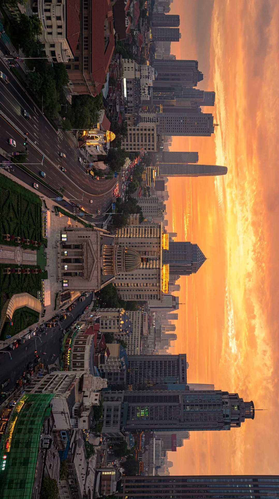
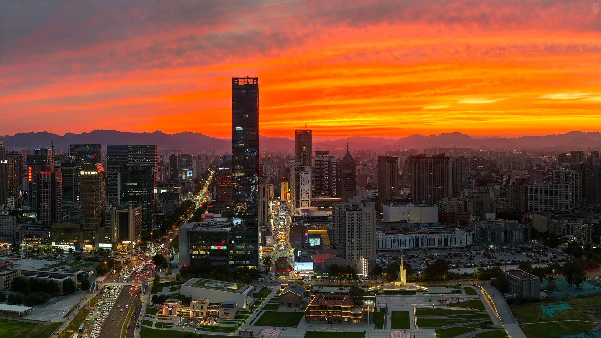

《中华人民共和国非物质文化遗产法》是为了继承和弘扬中华民族优秀传统文化，促进社会主义精神文明建设，加强非物质文化遗产保护、保存工作而制定的法律。
北京、天津、河北省非遗保护条例：国家法律的区域实施细则；结合三地文化特色，构建区域性整体保护制度框架。
《文旅融合视域下天津非物质文化遗产可持续发展路径创新研究》 - 安晟辰、钟蕾
《新质生产力赋能非遗发展的内在逻辑、现实困境与实践进路》 - 蒲娇等
第二届"京津冀优秀传统文化传承与高校美育实践路径"学术论坛
第五届京津冀设计学青年学者论坛
依托时空地理信息系统，实现大运河文化遗产全景可视化展示，联动天坛神乐署中和韶乐、花丝镶嵌等9项非遗。
建成全球首个皮影数字基因库，借助毫米级动作捕捉系统，采集87种传统身段，搭建起含1200万帧数据的动态数据库。
京津冀文化产业协同发展天津中心与河北中心携手，运用艺术微喷技术，高精度复制200余平方米的石家庄毗卢寺壁画。